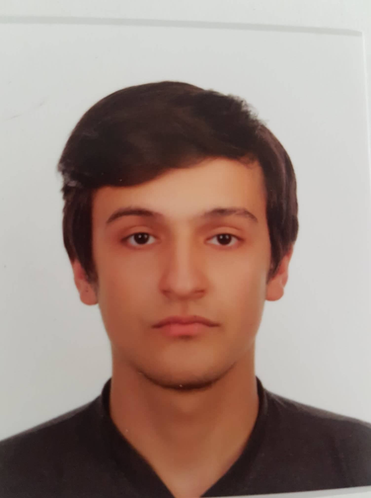

WE WERE HERE!!!
SÜLEYMAN AKYASAN

-- Resume and Portfolio --
Summary
A rising junior pursuing my Bachelor's in DOU software eng.My skill set is a blend of technical knowledge as well as interpersonal skills.My technical expertise involves java, mobile programming in android studio, HTML, CSS, and JavaScript. My people skills include problem solving and collaborating well in teams.I am seeking opportunities where I can utilize my existing knowledge for the betterment of the organization as well as learn new skills to enhance my potential and flourish myself professionally.
Education
- DOU Software Engineering Student
2020-2025
- Burhan Felek High School
2016-2020
- Bağlarbaşı Primary School
2008-2015
- Selamiali Secondary School
2015-2016
Skills
- Soft Skills
- Communication
- Problem solving
- Leadership
- Team Collobration
- Project Management
- Hard Skills
- HTML
- CSS
- JavaScript
- java
- Android Studio
- C++
- C#
©2023 Süleyman Akyasan